Poucos animes recentes conseguiram explodir em popularidade tão rápido quanto Solo Leveling.
A história de Sung Jin-Woo conquistou milhões de fãs graças à mistura perfeita de ação, evolução absurda de poder, monstros, dungeons e batalhas cinematográficas.
E depois de terminar a temporada, muita gente ficou procurando outros animes capazes de entregar a mesma sensação.
"Solo Leveling virou referência moderna quando o assunto é protagonista overpower."
1. Sword Art Online


Sword Art Online é provavelmente um dos animes mais próximos de Solo Leveling em estrutura.
Kirito também é um protagonista extremamente poderoso que evolui rapidamente e domina praticamente qualquer batalha.
⚔️ O que lembra Solo Leveling:
- Progressão de nível
- Monstros e bosses
- Protagonista overpower
- Mundo inspirado em RPG
- Batalhas extremamente estilosas
2. Overlord
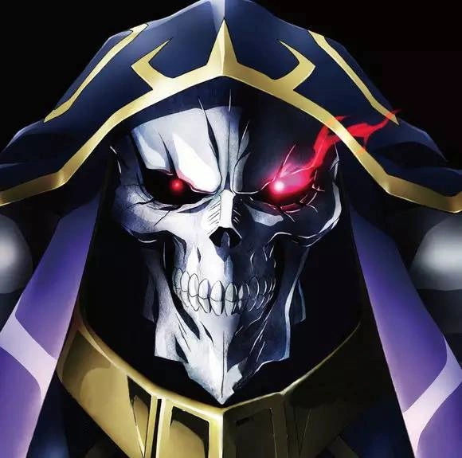
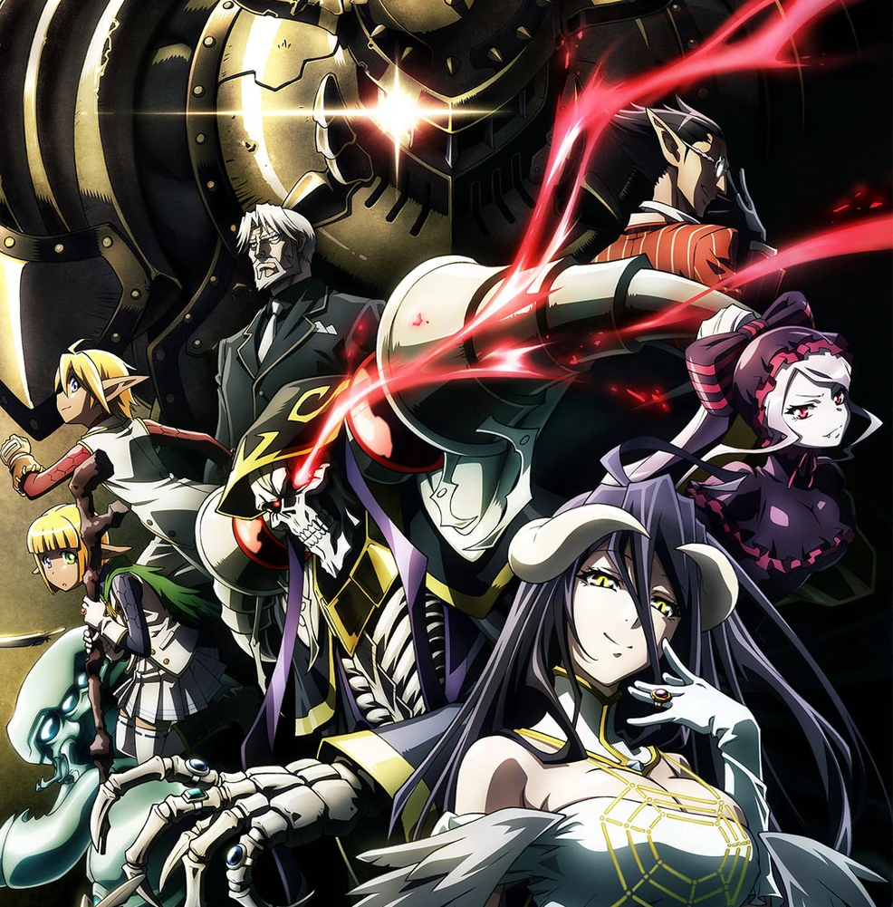
Se o que você mais gostou em Solo Leveling foi ver Jin-Woo ficando absurdamente poderoso, então Overlord é obrigatório.
Ainz Ooal Gown simplesmente domina qualquer inimigo que aparece em seu caminho.
"Overlord é praticamente a fantasia definitiva de poder absoluto."
3. DanMachi
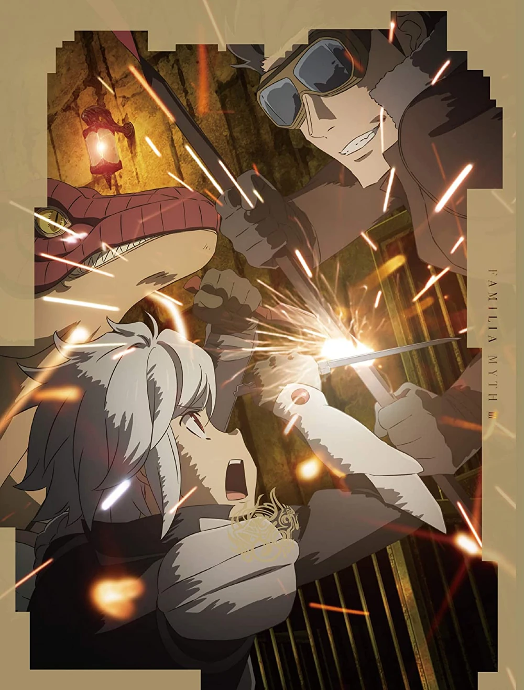
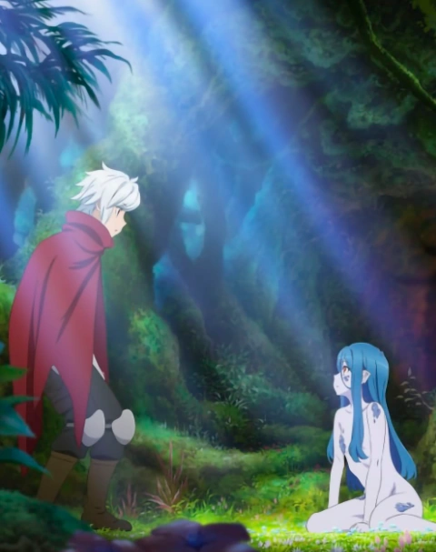
DanMachi mistura dungeons, evolução de níveis e monstros em uma estrutura extremamente parecida com Solo Leveling.
Bell Cranel começa fraco, mas evolui constantemente ao longo da história.
🔥 Destaques do anime:
- Sistema de níveis
- Dungeons gigantes
- Guildas
- Monstros
- Evolução constante do protagonista
4. The Rising of the Shield Hero
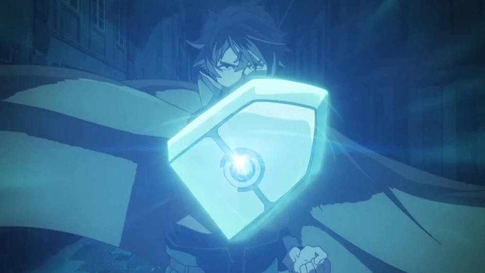
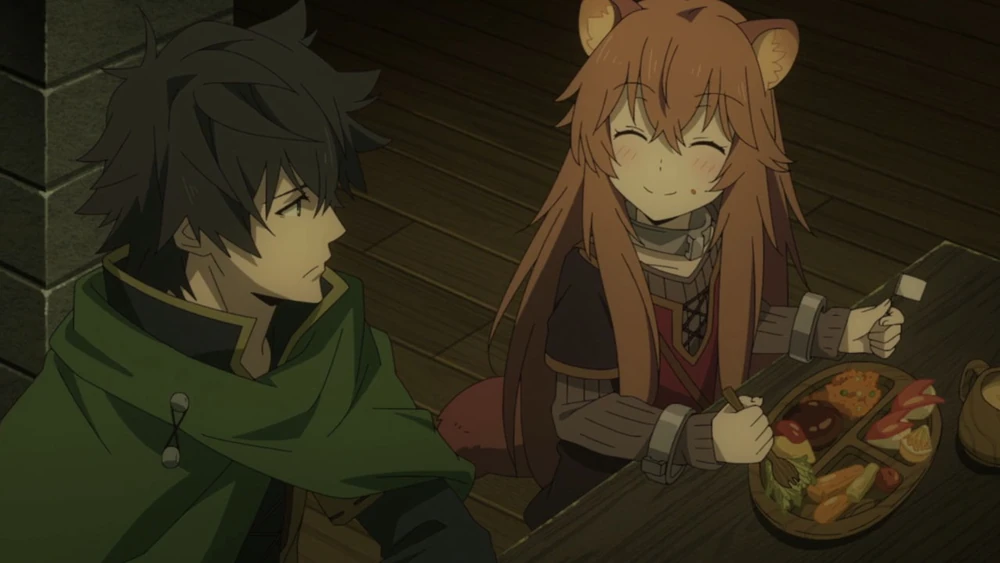
Assim como Jin-Woo, Naofumi começa sendo desprezado e desacreditado.
O anime trabalha muito bem a ideia de superação, vingança e crescimento psicológico do protagonista.
5. Arifureta
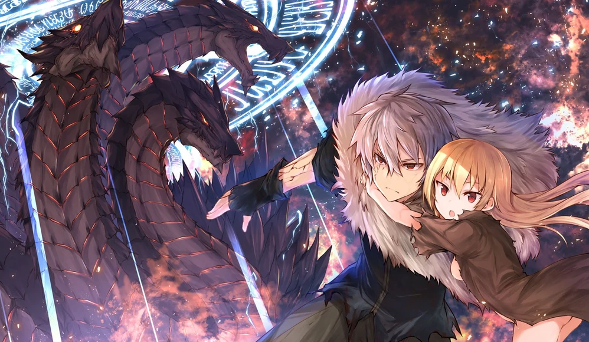
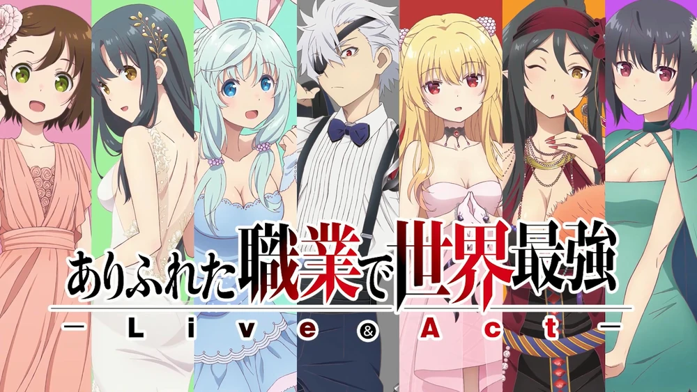
Arifureta talvez seja um dos animes mais parecidos com Solo Leveling quando o assunto é transformação do protagonista.
Hajime passa de alguém extremamente fraco para uma verdadeira máquina de destruição.
"A transformação de Hajime lembra muito a evolução brutal de Sung Jin-Woo."
6. Tower of God
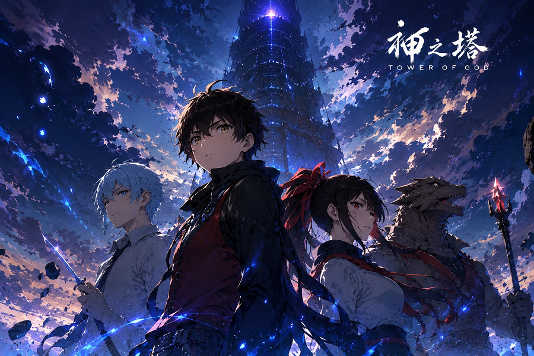
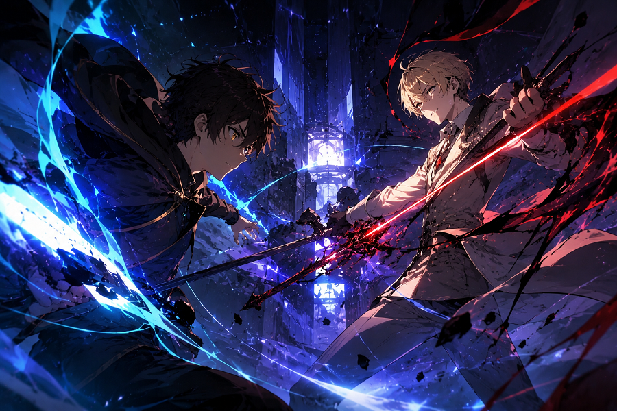
O anime acompanha Bam, um garoto misterioso que entra em uma gigantesca torre em busca de Rachel, sua única amiga e a pessoa mais importante de sua vida.
Cada andar funciona quase como um teste mortal, reunindo participantes extremamente perigosos, criaturas monstruosas e personagens com habilidades absurdas.
Conforme Bam sobe os andares, o nível das ameaças aumenta drasticamente, e o protagonista começa a despertar poderes cada vez mais impressionantes.
🗼 Por que fãs de Solo Leveling gostam de Tower of God:
- Origem em webtoon coreano
- Evolução constante do protagonista
- Sistema complexo de poderes
- Personagens extremamente fortes
- Mistérios gigantescos sobre o mundo
- Desafios cada vez mais perigosos
o visual único e a atmosfera mais sombria ajudam bastante a diferenciar Tower of God de outros animes de fantasia tradicionais.
"Tower of God mistura evolução de poder, mistério e tensão constante de uma forma muito parecida com Solo Leveling."
7. Goblin Slayer
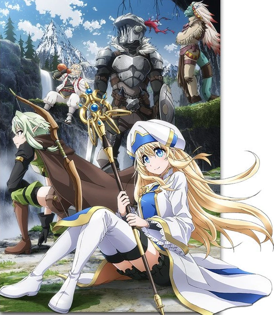
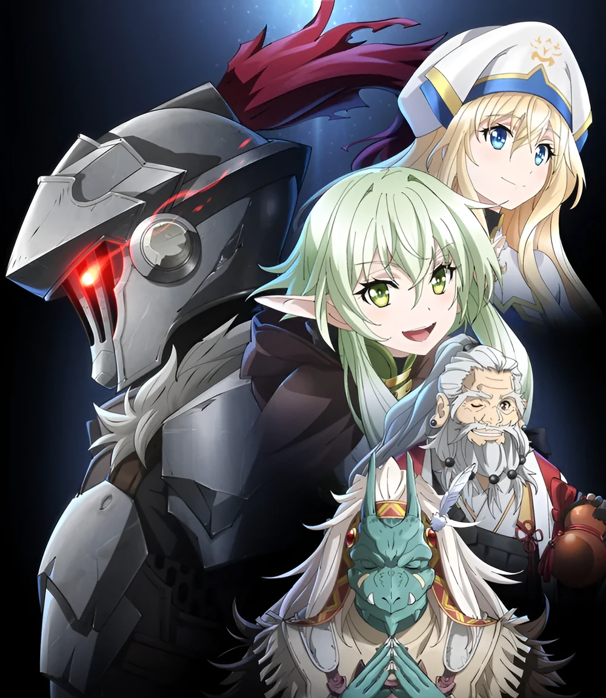
Goblin Slayer possui uma atmosfera muito mais sombria e brutal do que a maioria dos animes de fantasia.
O anime acompanha um aventureiro conhecido apenas como Goblin Slayer, um guerreiro obcecado em exterminar goblins após sofrer um trauma devastador no passado.
Diferente de vários protagonistas tradicionais, ele não luta por glória, fama ou reconhecimento.
Seu único objetivo é eliminar goblins da forma mais eficiente possível.
O protagonista é frio, estratégico e extremamente inteligente nas batalhas, utilizando armadilhas, fogo, venenos e qualquer vantagem possível para sobreviver.
Isso faz os combates parecerem muito mais perigosos e realistas.
🩸 O lado mais pesado do anime:
- Violência intensa
- Dark fantasy
- Combates brutais
- Monstros aterrorizantes
- Atmosfera sombria
- Estratégia ao invés de puro poder
Assim como Solo Leveling, Goblin Slayer transmite constantemente a sensação de perigo real, onde qualquer erro pode significar morte.
"Goblin Slayer transforma batalhas simples contra goblins em verdadeiros filmes de terror."
8. Kaiju No. 8
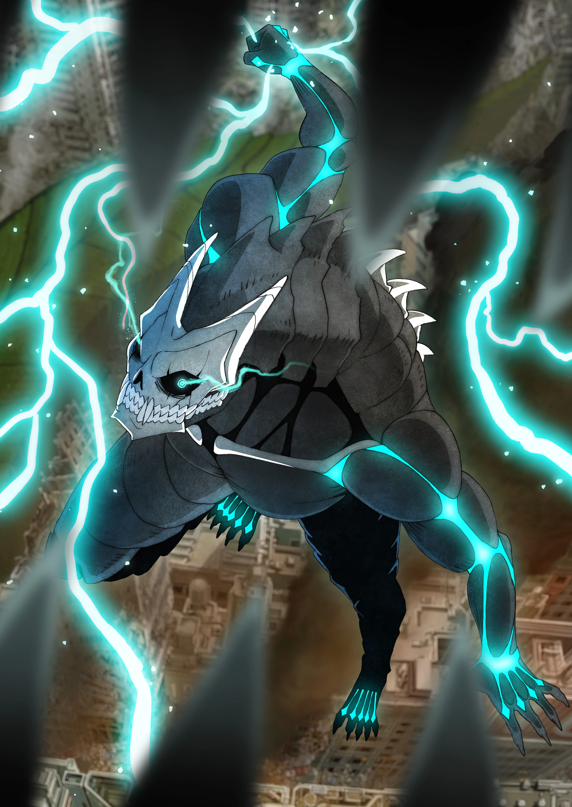
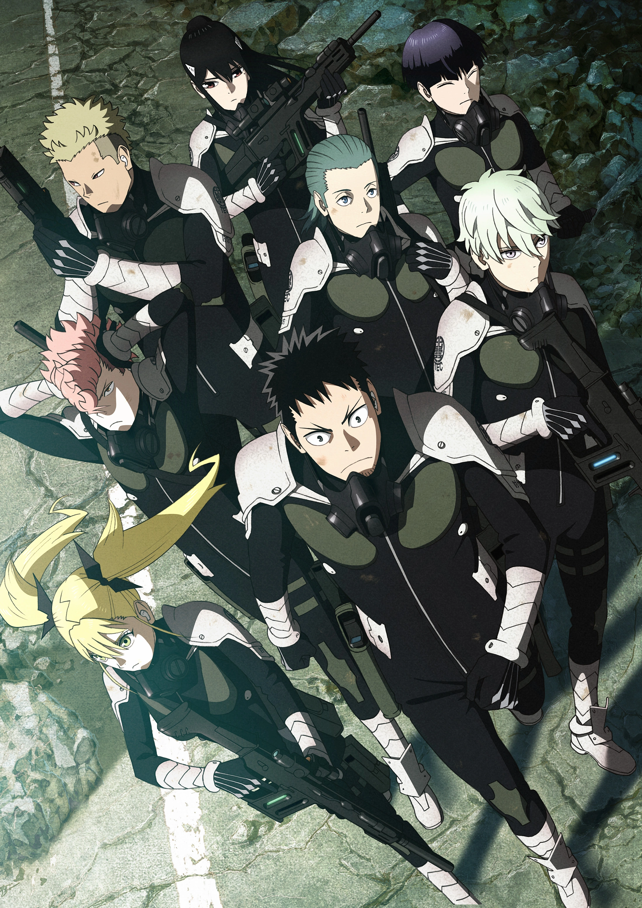
Kaiju No. 8 mistura ação, monstros gigantes e evolução de poder de uma forma que lembra bastante Solo Leveling.
O anime acompanha Kafka Hibino, um homem comum que sonhava em entrar para a força de defesa responsável por eliminar kaijus gigantes que atacam o Japão.
Porém, após um evento misterioso, Kafka acaba adquirindo a habilidade de se transformar em um poderoso kaiju.
A partir desse momento, sua vida muda completamente.
👹 Por que Kaiju No. 8 lembra Solo Leveling:
- Protagonista inicialmente fraco
- Evolução constante de poder
- Combates extremamente intensos
- Criaturas monstruosas gigantes
- Organização especializada em batalhas
- Muito hype nas cenas de ação
Outro ponto forte do anime é a qualidade absurda da animação, principalmente durante as transformações e batalhas contra os kaijus.
"Kaiju No. 8 mistura destruição em escala gigante com a mesma sensação de evolução que tornou Solo Leveling tão viciante."
9. Hunter x Hunter
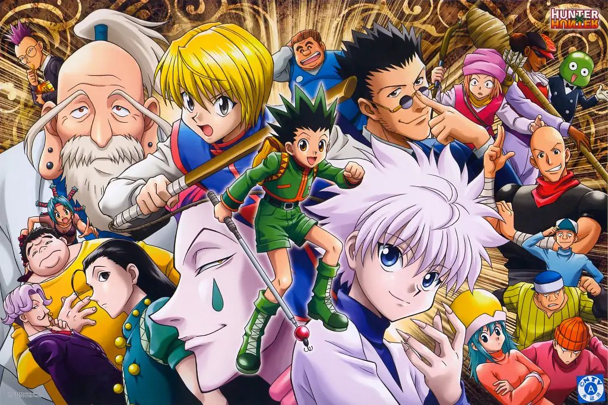
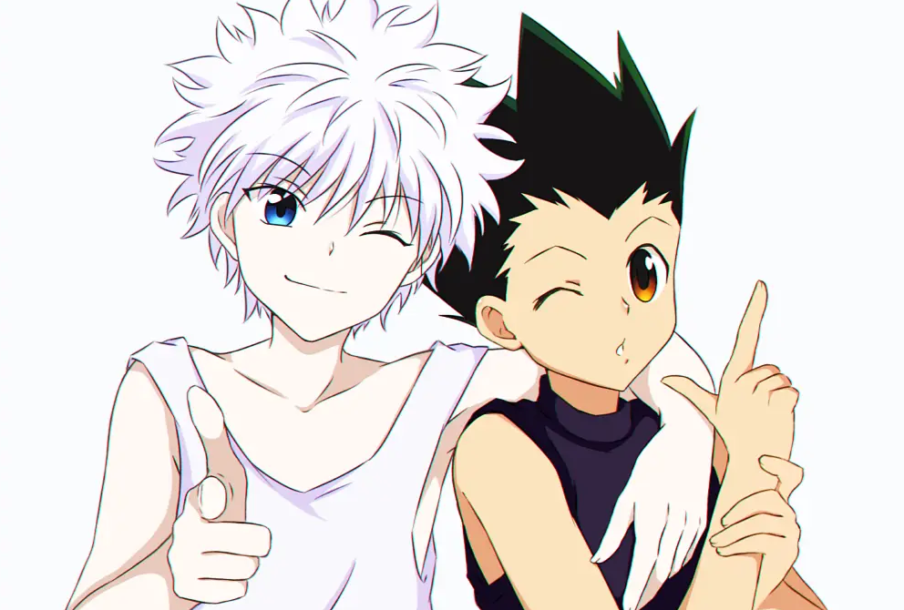
Hunter x Hunter é considerado por muitos um dos melhores shounens já criados, principalmente pela construção inteligente do mundo e pela evolução extremamente bem trabalhada dos personagens.
O anime acompanha Gon Freecss, um garoto que decide se tornar Hunter para encontrar seu pai desaparecido, embarcando em uma jornada cheia de desafios perigosos, inimigos absurdamente poderosos e batalhas estratégicas.
Diferente de vários animes focados apenas em força bruta, Hunter x Hunter transforma praticamente toda luta em um jogo psicológico.
O sistema de poderes chamado Nen é extremamente detalhado, fazendo com que inteligência, estratégia e criatividade sejam tão importantes quanto poder puro.
Assim como Solo Leveling, o anime transmite constantemente a sensação de progressão, mostrando os personagens enfrentando desafios cada vez mais mortais conforme ficam mais fortes.
⚡ Por que Hunter x Hunter agrada fãs de Solo Leveling:
- Evolução constante dos personagens
- Inimigos extremamente poderosos
- Sistema de poderes muito bem construído
- Batalhas estratégicas
- Arcos intensos e emocionantes
- Grande sensação de aventura
O arco das Chimera Ants é frequentemente citado como um dos melhores arcos da história dos animes, elevando a escala dos combates e o peso emocional da narrativa de forma absurda.
"Hunter x Hunter prova que inteligência e estratégia podem tornar batalhas ainda mais emocionantes do que puro poder."
10. That Time I Got Reincarnated as a Slime


That Time I Got Reincarnated as a Slime pode parecer estranho no começo, mas rapidamente se transforma em um dos animes de fantasia mais divertidos e viciantes dos últimos anos.
A história acompanha Satoru Mikami, um homem comum que morre e acaba reencarnando em outro mundo na forma de um slime.
O que parece ridículo inicialmente logo muda completamente quando ele começa a adquirir habilidades extremamente poderosas.
Agora conhecido como Rimuru Tempest, o protagonista evolui de maneira absurda, absorvendo poderes, derrotando monstros e construindo praticamente uma nação inteira.
Assim como Solo Leveling, o anime transmite constantemente aquela sensação satisfatória de progressão e crescimento de poder.
Cada novo inimigo derrotado faz Rimuru desbloquear habilidades ainda mais apelonas, tornando o personagem cada vez mais dominante dentro daquele universo.
Apesar do clima mais leve em vários momentos, o anime também possui batalhas gigantescas, guerras e cenas extremamente épicas conforme a história avança.
"That Time I Got Reincarnated as a Slime mistura fantasia, evolução absurda de poder e construção de mundo de forma extremamente viciante."
Qual Anime Mais Parece Solo Leveling?
Se você procura algo quase idêntico em estrutura, Sword Art Online, Arifureta e DanMachi são as opções mais próximas.
Já para quem gosta da fantasia de poder extrema, Overlord e Slime entregam protagonistas praticamente imparáveis.
E se o foco for clima sombrio e batalhas mais pesadas, Goblin Slayer e Tower of God são excelentes escolhas.
🎯 Resumindo:
- SAO → RPG e evolução
- Overlord → poder absoluto
- DanMachi → dungeons e níveis
- Goblin Slayer → dark fantasy
- Kaiju No. 8 → monstros e ação moderna
Solo Leveling ajudou a popularizar ainda mais histórias focadas em evolução extrema, sistemas de poder e protagonistas overpower.
Felizmente, existem vários animes capazes de entregar a mesma sensação de hype, crescimento e adrenalina.
Artigos Relacionados